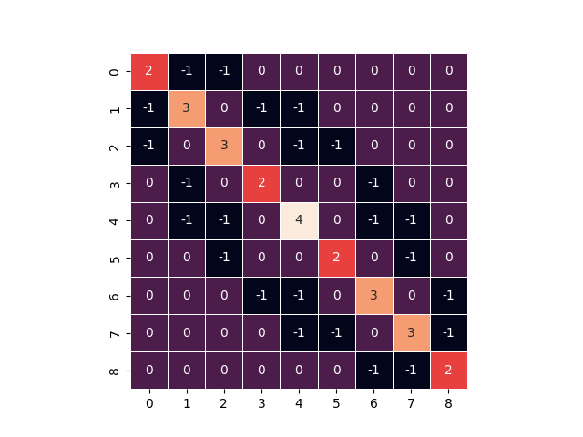

Note
Click here to download the full example code
Reverse Cuthill–McKee#
Cuthill-McKee ordering of matrices
The reverse Cuthill–McKee algorithm gives a sparse matrix ordering that reduces the matrix bandwidth.
Out:
ordering [(0, 0), (1, 0), (0, 1), (2, 0), (1, 1), (0, 2), (2, 1), (1, 2), (2, 2)]
unordered Laplacian matrix
bandwidth: 7
(0, 0) 2
(0, 1) -1
(0, 3) -1
(1, 0) -1
(1, 1) 3
(1, 2) -1
(1, 4) -1
(2, 1) -1
(2, 2) 2
(2, 5) -1
(3, 0) -1
(3, 3) 3
(3, 4) -1
(3, 6) -1
(4, 1) -1
(4, 3) -1
(4, 4) 4
(4, 5) -1
(4, 7) -1
(5, 2) -1
(5, 4) -1
(5, 5) 3
(5, 8) -1
(6, 3) -1
(6, 6) 2
(6, 7) -1
(7, 4) -1
(7, 6) -1
(7, 7) 3
(7, 8) -1
(8, 5) -1
(8, 7) -1
(8, 8) 2
low-bandwidth Laplacian matrix
bandwidth: 7
(0, 0) 2
(0, 1) -1
(0, 2) -1
(1, 0) -1
(1, 1) 3
(1, 3) -1
(1, 4) -1
(2, 0) -1
(2, 2) 3
(2, 4) -1
(2, 5) -1
(3, 1) -1
(3, 3) 2
(3, 6) -1
(4, 1) -1
(4, 2) -1
(4, 4) 4
(4, 6) -1
(4, 7) -1
(5, 2) -1
(5, 5) 2
(5, 7) -1
(6, 3) -1
(6, 4) -1
(6, 6) 3
(6, 8) -1
(7, 4) -1
(7, 5) -1
(7, 7) 3
(7, 8) -1
(8, 6) -1
(8, 7) -1
(8, 8) 2
import numpy as np
import matplotlib.pyplot as plt
import seaborn as sns
import networkx as nx
# build low-bandwidth matrix
G = nx.grid_2d_graph(3, 3)
rcm = list(nx.utils.reverse_cuthill_mckee_ordering(G))
print("ordering", rcm)
print("unordered Laplacian matrix")
A = nx.laplacian_matrix(G)
x, y = np.nonzero(A)
# print(f"lower bandwidth: {(y - x).max()}")
# print(f"upper bandwidth: {(x - y).max()}")
print(f"bandwidth: {(y - x).max() + (x - y).max() + 1}")
print(A)
B = nx.laplacian_matrix(G, nodelist=rcm)
print("low-bandwidth Laplacian matrix")
x, y = np.nonzero(B)
# print(f"lower bandwidth: {(y - x).max()}")
# print(f"upper bandwidth: {(x - y).max()}")
print(f"bandwidth: {(y - x).max() + (x - y).max() + 1}")
print(B)
sns.heatmap(B.todense(), cbar=False, square=True, linewidths=0.5, annot=True)
plt.show()
Total running time of the script: ( 0 minutes 1.081 seconds)